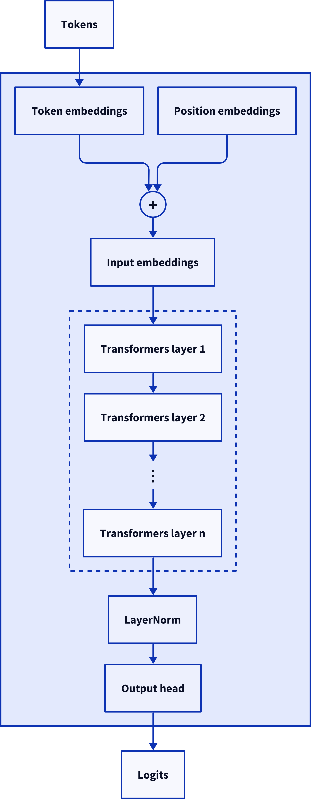
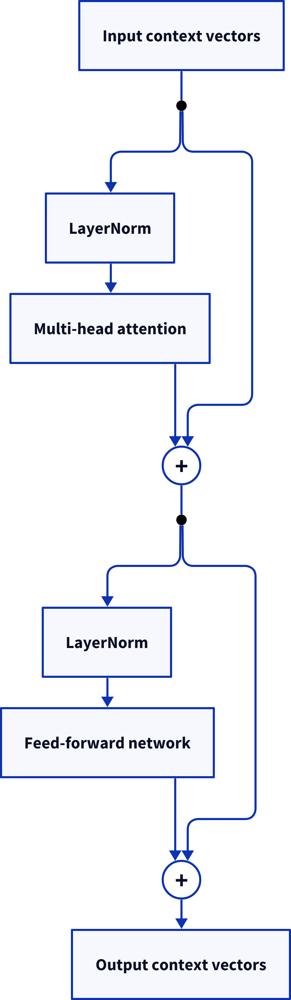
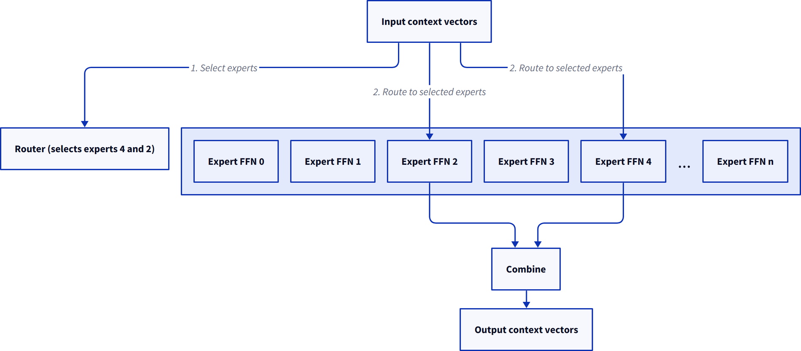

这是「从GPT-2到MoE」系列的第一篇。作者在Raschka《Build a Large Language Model (from Scratch)》的GPT-2代码之上，自己加了一套混合专家支持，并用一张RTX 3090从零训练了一个MoE模型。
第一篇讲清两件事：MoE在机制上到底是什么，以及为什么「路由器挑专家」这个最自然的写法会踩到一个反向传播的死角。后面几篇会依次讲稀疏化、真正的代码实现、负载均衡、辅助损失和训练结果。
「混合专家」这个词很容易让人想到一个模型由若干彼此独立、各自擅长不同领域的部分组成。也许一部分懂编程，一部分懂历史，另一部分懂哲学，等等。你甚至可以想象一个系统里挂着好几个分领域的LLM，再把进来的输入路由到合适的那个。
这种设计其实并不差：Sakana.ai今年6月发布的Fugu系统就引发了不少关注，它的工作方式大致就是这样。但MoE里的「专家」处在低得多的层级上，而且（和LLM里很多事情一样）它们擅长的东西往往很古怪、很异类，是训练过程中它们自己发现对建模语言有帮助的东西。
我们来看看它们在机械层面是怎么嵌进去的。我们要改造的GPT-2风格LLM，也就是Raschka书里描述的那个，长这样：

MoE的魔法发生在那些Transformer层内部，所以我们放大看其中一层：

具体来说，把LLM变成MoE的做法，是把这个前馈网络（FFN）替换成多个彼此独立的FFN，也就是我们的专家。不同的上下文向量会根据自己的内容被路由到不同的专家。
这些FFN本身，无论密集版还是MoE版，都简单得出人意料。在GPT-2里，它们接收进来的上下文向量，过一个普通线性层把维度扩大四倍，再经过GELU激活函数，最后用另一个线性层投影回原来的维度。
这就是一个极简单的两层神经网络，初看甚至有点随意。讲LLM的教程往往花大量篇幅解释注意力机制，对FFN则基本一笔带过。
但在GPT-2里，FFN的参数量是注意力机制的两倍。它们显然极其重要。我（很不严谨）的比喻是：注意力负责想清楚该思考什么，FFN才是真正思考的地方。这个比喻和真实机制并不完全吻合，但作为建立直觉的模型还不错。
MoE正是利用这一点。每个Transformer块不再只有一个FFN，而是有多个，每个上下文向量只用到其中一个子集。为此我们需要一个路由器，也叫门控网络：它接收进来的上下文向量，为每一个决定该用哪些FFN，也就是哪些专家。然后我们把输入送进被选中的专家，把结果合并起来，得到最终输出，就像这样：

这样做能给LLM腾出更多「空间」去记住事实和思考方式：知识可以分摊到多个专家上。当然，你也可以通过把FFN做得更大来达到同样效果。但MoE的好处在于，每个上下文向量只激活一部分专家，于是每个上下文向量上的计算量就降下来了。代价是所有专家都得留在内存里：注意我们是按上下文向量路由的，在一个batch的序列里，很可能大部分甚至全部专家都会被用到，只是我们不必让所有数据都流过所有专家。
以上就是基本原理，概念上并不难。真正棘手的是实现：路由器具体怎么为一个上下文向量挑专家？这个选择怎么落地？怎么做得高效？以及，我们怎么把路由器训练得会挑？
项目开始时，我第一步是先搜了一圈参考资料，找到了IBM这篇很好的综述。
那篇文章提到了一批论文，其中四篇看起来最相关：
《Adaptive Mixtures of Local Experts》，1991年那篇提出这个名字的论文。但它对每个输入都会跑一遍所有专家，当时的出发点不是效率，而是让网络的不同部分各自专精于不同的东西。
《Outrageously Large Neural Networks: The Sparsely-Gated Mixture-of-Experts Layer》，2017年。它证明了可以在MoE上做门控，只跑每个输入「最好」的那些专家，从而减少计算量。
《GShard: Scaling Giant Models with Conditional Computation and Automatic Sharding》，2020年。它在前者基础上把这套做法专门应用到Transformer模型上，并简化了一些东西，后面细说。
《Switch Transformers: Scaling to Trillion Parameter Models with Simple and Efficient Sparsity》，2021年。它又做了几处很漂亮的简化。
我把它们都读了一遍，惊喜地发现可读性都不错。看起来照着它们（以及IBM那篇综述）说的做，我就能拼出一个能用的MoE模型，事实也确实如此：模型能跑，也训练得很好。四篇里我觉得Switch Transformers最有用，但1991年那篇原始论文也帮我理清了不少东西。如果你想补背景，我真心建议翻一翻。
等我把东西拼好、把模型训完，又拿自己写的代码和Hugging Face的Mixtral源码做了一次对照。Mixtral是我印象里第一个听说过的开源MoE模型，除了MoE之外它比GPT-2还有一堆改进（RMSNorm、RoPE等等），规模也比我这个大得多。但它在MoE这部分的具体做法和我的基本一致，只有一处不同：辅助损失的计算方式，后面会细讲。这让我安心了一些。
我还把最终的代码库拿去问过三个LLM：ChatGPT、Claude和Kimi K3，确认自己没有偏离主流写法，或者在别的地方犯迷糊。为了不让它们用上我们过去对话的记忆，我用的是匿名私密会话，问它们：
「请看一下附件，告诉我你看到了什么。我特别关心MoE这部分。」
三家的回答大同小异：「这是一个相当标准的、建立在GPT-2之上的MoE实现，负载均衡部分改自Switch Transformers。」这就更让人安心了。
所以我可以放心地说，我搭出来的是一个常规实现，接下来的内容就是描述它。这些东西在我脑子里还很新鲜，希望用「刚读完Raschka那本书时的我能听懂」的说法写出来，能帮到第一次接触它的人。
先从路由器的机制讲起。
我们要解决的问题是：一个上下文向量进入MoE块（如上图），我们要决定把它路由到哪些专家。假设一共有n个专家，每个输入要送给其中k个（当然0< k < n），上下文向量的维度记为 d_emb。
把一个d_emb维的输入映射成若干选项上的概率分布，对神经网络来说是标准工作，一层线性层就够了。想象我们建一个d_emb输入、n输出的线性层，对某个上下文向量，它可能输出（这里n = 6）这样一组值：
In [5]: router(inputs)
Out[5]:
tensor([ 0.0418, -0.1140, 0.4254, 0.1342, 0.5106, -0.1385],
grad_fn=<ViewBackward0>)接下来就可以想象从中挑出top k的下标。
具体一点，设k = 2。最大的两个数在下标4和2，也就是我们要把原始上下文向量路由给专家4和专家2。它们各自算完，给我们返回输出上下文向量，我们再把这些结果合并起来。
怎么合并？在我们的GPT-2风格代码里，上下文向量相加是家常便饭，而且加出来的结果是有意义的：token嵌入会和位置嵌入相加，注意力与FFN周围的残差捷径也会加回各自的结果上，等等。那我们是不是也可以直接相加？
但这样的设计有个问题：它训练不了路由器。
再想一遍这个MoE块，图在这里，再贴一次：
顺着数据流看：上下文向量流进路由器，我们用路由器的输出挑出两个专家，然后原始上下文向量（也就是喂给路由器的那份）流进这两个专家，结果再被合并，得到最终输出。
现在想想训练时会发生什么。你把训练数据过一遍模型，算出损失，也就是模型在这批数据上表现如何，再用损失去求「要往哪个方向调参数才能变好」的梯度。梯度是反向传播算出来的：从损失出发，反向穿过网络，倒着走一遍计算图。
当反向传播走到这里时，它会从输出上下文向量开始，倒着穿过合并步骤，穿过被选中的两个专家，回到输入上下文向量，然后再继续往前一层走。
路由器里那次「选出两个专家」的计算，在前向过程中确实发生了，但它不在我们从损失往回想的那张计算图里。那是一条死路：选出哪些专家这件事，和最终到达损失的那条计算路径之间，没有任何连接。有意思的是，画那张图的过程让我对这一点看得特别清楚：图顶部那些有点凌乱的箭头标号和顺序数字，正是同一个问题的直接产物。
这意味着路由器不会被训练。训练的反向过程会完全忽略它，也就不会有梯度作用在它身上。一个权重随机的初始模型会随机地把上下文向量分配给专家，然后一直这么随机下去。
显然，我们必须想办法修改计算图，让路由器被连上：当反向传播从输出上下文向量回流时，它能看见路由器，最好还能看见某个可以被训练、让它把活干得更好的部分。
《Adaptive Mixtures of Local Experts》一开头描述的正是这样一项先前工作：把路由器的输出当作每个专家的权重。这是个巧妙的技巧，虽然有问题（稍后就会看到），但它解决了反向传播的断连问题。有意思的是，这篇论文自己最后选了别的做法，反倒是后来的工作，比如Switch Transformers，又回到了这条路，只是加了几处重要调整。
前面说过，1991年的人们并不把MoE当作省算力的手段。他们关注的是训练出更擅长特定任务的模型，并觉得把任务拆分开来会让这件事更容易。
所以在他们那里，可以直接把上面那组输出做归一化：
In [7]: logits
Out[7]:
tensor([ 0.0418, -0.1140, 0.4254, 0.1342, 0.5106, -0.1385],
grad_fn=<ViewBackward0>)
In [8]: torch.softmax(logits, dim=-1)
Out[8]:
tensor([0.1459, 0.1249, 0.2141, 0.1600, 0.2332, 0.1218],
grad_fn=<SoftmaxBackward0>)然后让输入流过全部六个专家，再按这些数字加权求和：0.1459乘专家0的输出，0.1249乘专家1的输出，以此类推。大致是这样：
这样一来，反向传播从输出上下文向量（以及损失）出发时，就有一条路能走回路由器了。权重提供了这条回传路径，路由器就能被训练。
但这个版本对每个token都会跑所有专家，因此没有现代稀疏MoE的计算优势。
它还有论文里指出的另一个问题：如果你希望每个专家都有清晰的责任边界，事情就乱了。假设上面例子里的专家2是那个真正懂某项任务的专家，其他专家也都在出力；除非你能想办法把它们在这项任务上的权重训练到恰好为零，否则为了让训练损失好看，它们就得学着互相抵消。
他们的解决方案是先跑所有专家，再在输出上加一个门控函数，把未被选中专家的结果直接丢掉，见他们论文的图1。现代的做法有些不同，我们接着看《Outrageously Large Neural Networks》就知道。
参考：https://www.gilesthomas.com/2026/09/gpt-2-to-moe